El microservicio orden-ms gestiona la entidad
Orden y su ciclo de vida: cliente asociado mediante
identificador, concepto solicitado mediante identificador, cantidad,
precio unitario, total, estado y fecha de creación. Estos datos
pertenecen al dominio de órdenes porque describen una transacción y su
estado; el servicio no administra categorías, productos ni el catálogo,
responsabilidades que corresponden a
pagatu-catalogo-ms.
Los campos clienteId y conceptoId se
mantienen como referencias por identificador. De esta forma,
orden-ms no necesita apropiarse de las tablas o
responsabilidades de otros dominios y conserva una separación clara de
responsabilidades.
La persistencia del servicio se implementó con PostgreSQL
16 en Docker. En DEV, la aplicación Spring Boot se ejecuta en
el host y se conecta a pagatu_orden_db mediante
localhost:15433. La estructura se versiona con Flyway y
Hibernate se mantiene en modo de validación
(ddl-auto: validate).
La migración V1__create_ordenes.sql crea la tabla
ordenes y los índices necesarios.
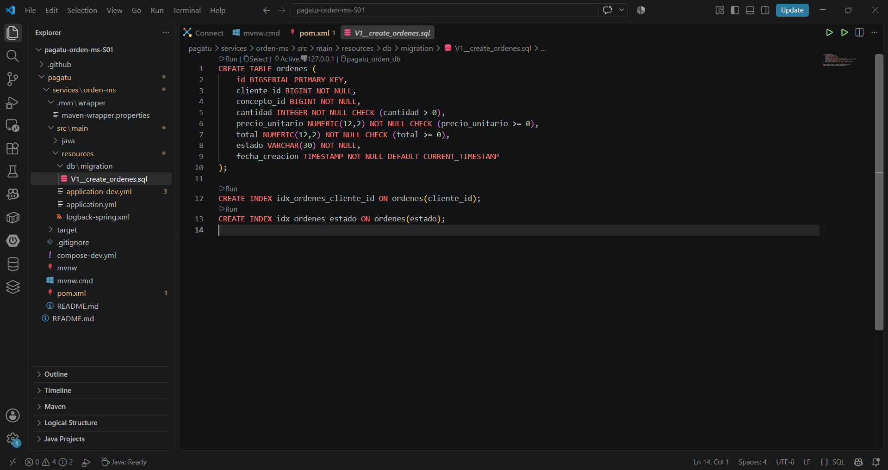
ordenes.
Durante el arranque se verificó que Flyway aplicó la versión 1 y que
Spring Boot terminó de iniciar en el puerto 8080.
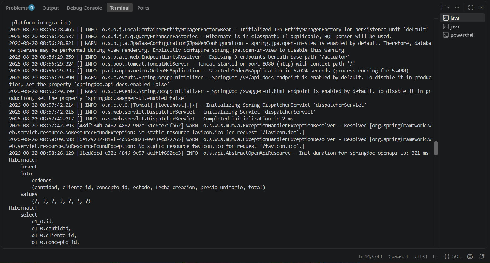
psqlSe comprobó directamente desde el contenedor que existen
flyway_schema_history y ordenes, y que la
tabla contiene datos persistidos.
docker exec -it pagatu-postgres-orden-dev psql -U pagatu -d pagatu_orden_db -c "\dt"
docker exec -it pagatu-postgres-orden-dev psql -U pagatu -d pagatu_orden_db -c "SELECT * FROM ordenes;"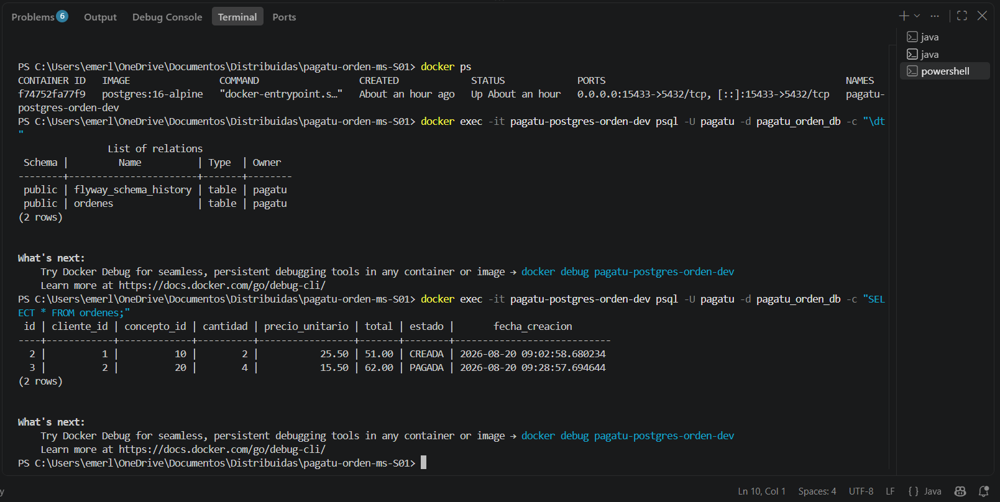
psql
dentro del contenedor PostgreSQL.
También se consultó el historial de Flyway para comprobar que la migración quedó registrada como exitosa.
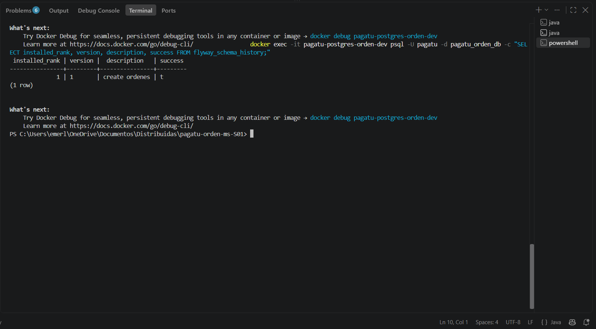
create
ordenes, con estado exitoso.
El servicio se ejecutó en DEV con el Maven Wrapper del proyecto:
.\mvnw.cmd spring-boot:runEl contrato REST se expone bajo /api/v1/ordenes y fue
verificado tanto por Swagger como por PowerShell.
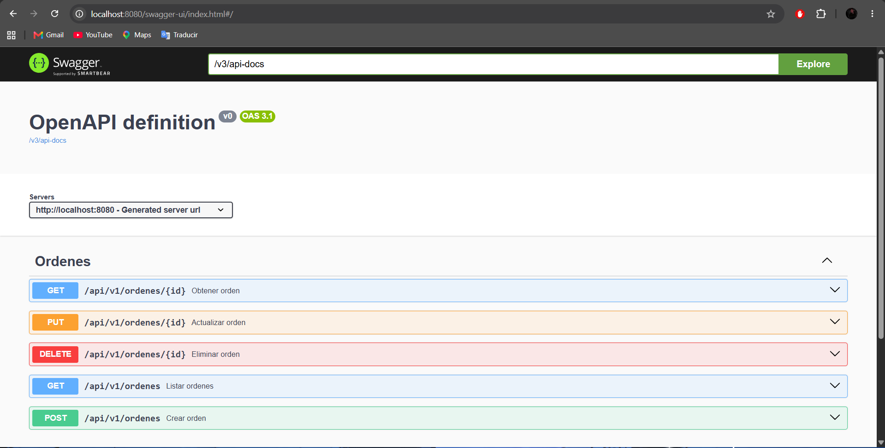
ordenes.
POST - creación. Se creó una orden desde PowerShell y el servicio calculó el total de manera consistente.
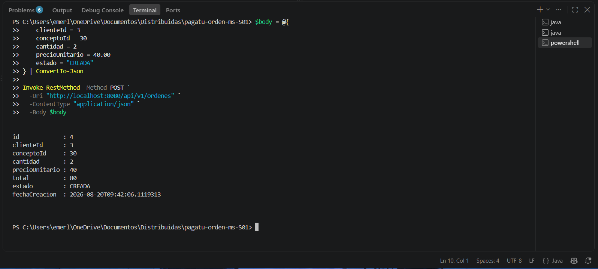
GET - lectura. Se listaron las órdenes persistidas mediante el endpoint general.
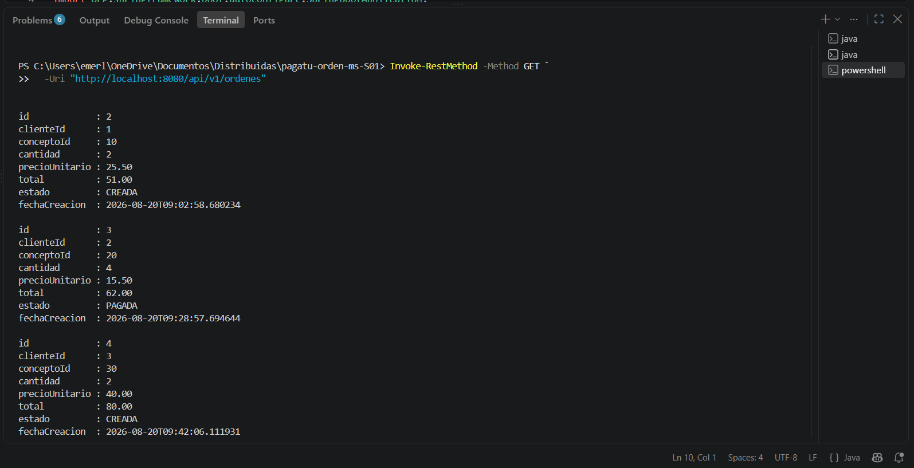
PUT - actualización. Se modificó una orden existente y el total se recalculó a partir de la nueva cantidad.
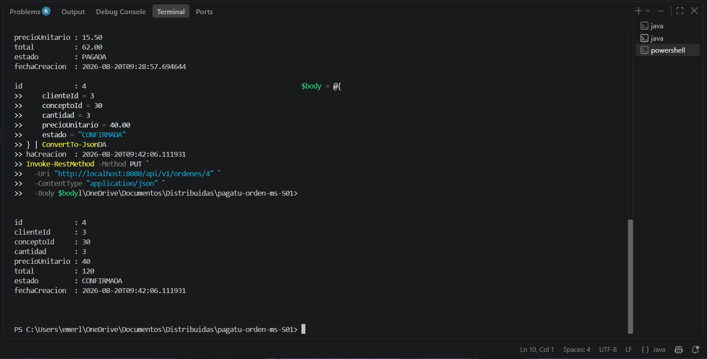
DELETE y 404. Después de eliminar el recurso, una
consulta posterior al mismo identificador devolvió
404 Not Found, confirmando el manejo de recursos
inexistentes.
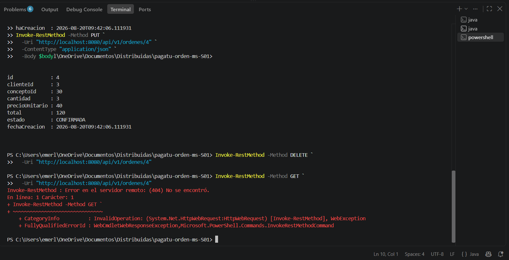
Se envió una orden con cantidad = 0. La validación
rechazó la entrada y devolvió 400 Bad Request, junto con el
mensaje cantidad: debe ser mayor que 0 y un
traceId para trazabilidad.
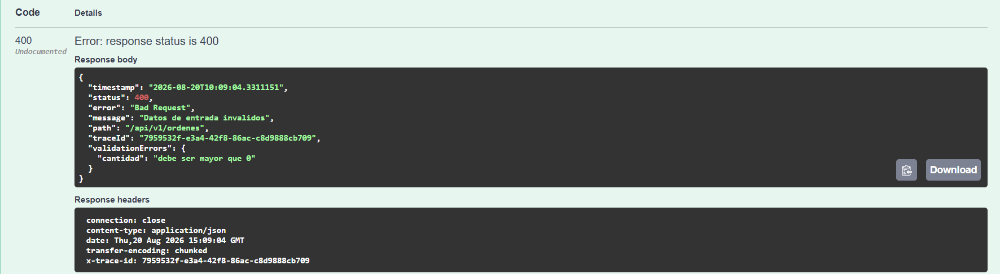
Se ejecutaron dos instancias del mismo microservicio en paralelo. La
primera utiliza el puerto 8080 y la segunda se inició con
el argumento --server.port=8081. Ambas comparten la misma
PostgreSQL DEV, pero cada proceso atiende peticiones de forma
independiente.
| Aspecto | Instancia 1 | Instancia 2 |
|---|---|---|
| Puerto | 8080 |
8081 |
| Ejecución | Maven Wrapper | Maven Wrapper + --server.port=8081 |
| Base de datos | Misma PostgreSQL DEV | Misma PostgreSQL DEV |
/actuator/health |
UP |
UP |
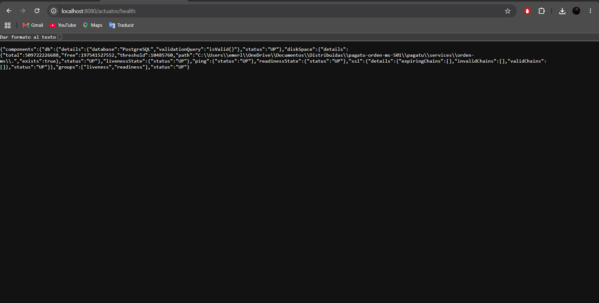
localhost:8080/actuator/health con estado UP.
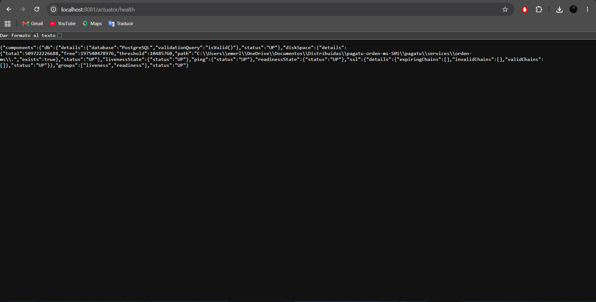
localhost:8081/actuator/health con estado UP.
Actuator expuso métricas de HTTP, JVM, CPU, JDBC, HikariCP y Tomcat, entre otras.
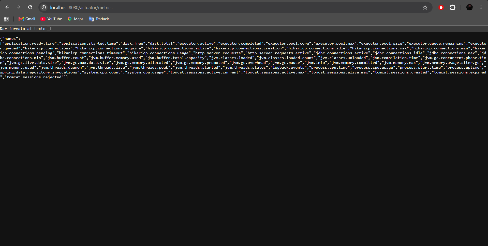
/actuator/metrics.
Un microservicio no debe depender de un único puerto fijo porque el escalamiento horizontal implica crear varias instancias del mismo servicio. En DEV se usan puertos distintos para evitar colisiones; en una arquitectura distribuida real, un Gateway, balanceador o mecanismo de descubrimiento de servicios dirige el tráfico a las instancias disponibles sin que el consumidor tenga que conocer cada puerto individual.
Desde pagatu/services/orden-ms:
docker compose -f compose-dev.yml up -d
docker psConfiguración utilizada:
Host: localhost
Puerto: 15433
Base de datos: pagatu_orden_db
Usuario: pagatu$env:JAVA_HOME="C:\Program Files\Eclipse Adoptium\jdk-21.0.12.8-hotspot"
$env:Path="$env:JAVA_HOME\bin;$env:Path"
.\mvnw.cmd spring-boot:runVerificaciones principales:
http://localhost:8080/swagger-ui.html
http://localhost:8080/actuator/health
http://localhost:8080/actuator/metricsEn otra terminal:
$env:JAVA_HOME="C:\Program Files\Eclipse Adoptium\jdk-21.0.12.8-hotspot"
$env:Path="$env:JAVA_HOME\bin;$env:Path"
.\mvnw.cmd spring-boot:run "-Dspring-boot.run.arguments=--server.port=8081"Verificar:
http://localhost:8081/actuator/healthdocker exec -it pagatu-postgres-orden-dev psql -U pagatu -d pagatu_orden_db -c "\dt"
docker exec -it pagatu-postgres-orden-dev psql -U pagatu -d pagatu_orden_db -c "SELECT * FROM ordenes;"
docker exec -it pagatu-postgres-orden-dev psql -U pagatu -d pagatu_orden_db -c "SELECT installed_rank, version, description, success FROM flyway_schema_history;"Repositorio:
https://github.com/obedfernandez/pagatu-orden-ms-S01
La aplicación se ejecutó en DEV con Maven Wrapper y PostgreSQL en
Docker. La ejecución de la aplicación dentro de Docker corresponde al
apartado opcional de la sesión y no se incluyó en esta evidencia.
En la primera ejecución, Spring Boot logró conectarse a PostgreSQL,
pero Hibernate detuvo el arranque con el mensaje
Schema validation: missing table [ordenes]. El log permitió
descartar un problema de conexión, porque HikariCP había establecido
correctamente la sesión con pagatu_orden_db.
El diagnóstico mostró que la migración
V1__create_ordenes.sql existía, pero Flyway no estaba
siendo auto-configurado correctamente con la configuración inicial de
dependencias en Spring Boot 4. Se ajustó el pom.xml para
utilizar spring-boot-starter-flyway junto con el soporte
PostgreSQL. Al reiniciar, Flyway creó
flyway_schema_history, aplicó la versión 1 y luego
Hibernate pudo validar el esquema. El aprendizaje principal fue revisar
el orden de los logs para distinguir entre errores de conexión,
migración y validación JPA.
Un microservicio debe poder ejecutarse de forma reproducible para que su funcionamiento no dependa de la configuración particular de una computadora. En DEV, Maven Wrapper estandariza la forma de compilar y levantar la aplicación, mientras que la configuración por ambiente mantiene separadas las dependencias externas. En un entorno cercano a producción, la contenerización permite empaquetar de forma consistente la aplicación y sus requisitos. Además, el servicio debe ser stateless para que varias instancias puedan atender solicitudes sin depender de memoria local compartida. Al escalar horizontalmente, cada instancia puede usar un puerto o dirección diferente, por lo que el consumidor no debería acoplarse a uno específico. Un Gateway, balanceador o registro de servicios permite distribuir el tráfico y reemplazar instancias sin afectar al cliente. Esto mejora escalabilidad, disponibilidad y mantenibilidad del sistema distribuido.
1. ¿Cuál es el aprendizaje más importante que te llevas de la
clase de hoy?
Aprendí a construir y validar un microservicio Spring Boot con
persistencia PostgreSQL, migraciones Flyway, CRUD REST, Swagger,
Actuator y trazabilidad, además de comprobar que el mismo servicio puede
ejecutarse en más de una instancia.
2. ¿Qué punto de la clase te resultó más confuso o te dejó
con dudas?
La parte más confusa fue diferenciar un error de conexión a PostgreSQL
de un error en las migraciones. Los logs ayudaron a identificar que la
conexión funcionaba y que el problema estaba en la ejecución de
Flyway.
3. ¿Tienes alguna pregunta que te gustaría que sea respondida
la siguiente clase?
¿Cómo se incorporará un Gateway o un registro de servicios para que las
distintas instancias puedan descubrirse y recibir tráfico
automáticamente?
4. Sobre tu nivel de comprensión de la clase de
hoy:
¡Entendido! - Lo domino y podría explicarlo.
5. ¿Cómo puedo ayudarte a comprender mejor el
tema?
Continuar con ejercicios prácticos donde se integren los componentes del
sistema distribuido y se analicen errores reales de configuración, red y
persistencia.
6. Autoevaluación de participación y esfuerzo:
Muy Comprometido/a: Me esforcé al máximo.
7. Mi satisfacción con la clase fue:
9/10.